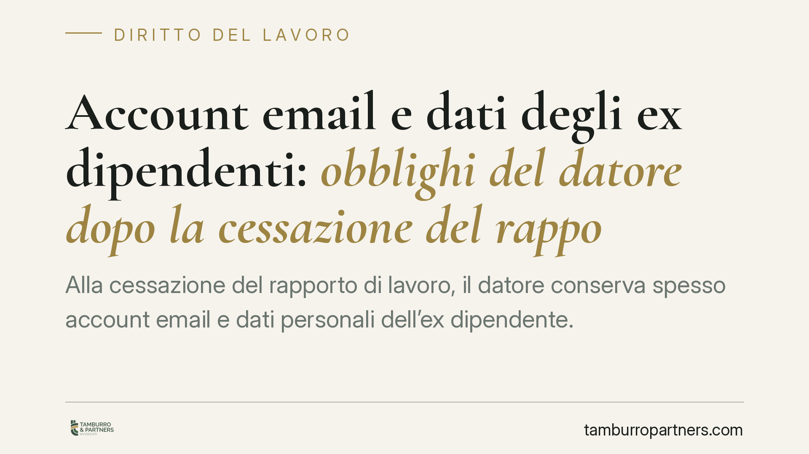

Account email e dati degli ex dipendenti: obblighi del datore dopo la cessazione del rapporto
Alla cessazione del rapporto di lavoro, il datore conserva spesso account email e dati personali dell'ex dipendente. Il GDPR impone limiti precisi: disattivazione tempestiva della casella e risposta alle richieste di accesso. Chi non si organizza rischia contestazioni e sanzioni. Vediamo cosa prevede la normativa e come impostare un offboarding conforme.

Il caso
La gestione dei dati personali dell'ex dipendente è un punto critico e ricorrente nei controlli del Garante per la protezione dei dati personali. Due le questioni più frequenti: il mantenimento dell'account di posta aziendale dopo la cessazione del rapporto e l'esercizio, da parte dell'ex lavoratore, del diritto di accesso ai propri dati.
Sono temi distinti ma collegati. La casella email intestata al dipendente contiene dati personali di quest'ultimo, ma anche comunicazioni riferite a terzi (clienti, colleghi, fornitori). Il datore deve bilanciare la continuità operativa con gli obblighi di protezione dei dati. In più provvedimenti il Garante ha affermato che la conservazione prolungata e l'accesso indiscriminato alla posta dell'ex dipendente non sono legittimi senza presupposti precisi.
Inquadramento normativo
Il riferimento centrale è l'art. 5 del Regolamento (UE) 2016/679 (GDPR). Il par. 1, lett. c), impone il principio di minimizzazione: i dati trattati devono essere adeguati, pertinenti e limitati a quanto necessario. Il par. 1, lett. e), fissa la limitazione della conservazione: i dati vanno mantenuti per un arco di tempo non superiore al conseguimento delle finalità.
Applicati all'account email, questi principi comportano una regola operativa: alla cessazione del rapporto la casella va disattivata senza indugio. È prassi raccomandata attivare un sistema di risposta automatica che informi i mittenti della cessazione del rapporto e indichi un recapito alternativo, mantenendo l'account attivo per un periodo limitato e predeterminato. Un reindirizzamento automatico sulla casella di un altro soggetto, invece, consente di accedere a corrispondenza privata ed è di regola illegittimo.
L'art. 5, par. 2, GDPR, introduce il principio di accountability: è il titolare del trattamento — quindi il datore — a dover dimostrare la conformità delle proprie scelte. L'onere della prova grava su chi tratta i dati, non sull'interessato.
Quanto al diritto di accesso, l'art. 15 GDPR riconosce all'ex dipendente la facoltà di ottenere conferma del trattamento e copia dei dati che lo riguardano. L'art. 12, par. 3, impone di rispondere entro un mese dalla richiesta, termine prorogabile di ulteriori due mesi quando la complessità o il numero delle istanze lo giustifichino, dandone comunicazione motivata all'interessato.
Il confine tra diritto di accesso e tutela dei terzi
Il diritto di accesso non è assoluto. L'art. 15, par. 4, GDPR precisa che il diritto di ottenere copia dei dati non deve ledere i diritti e le libertà altrui. È il nodo più delicato: la casella dell'ex dipendente contiene comunicazioni in cui compaiono dati di terzi.
Il criterio operativo è la valutazione caso per caso. Il datore non può né negare integralmente l'accesso adducendo genericamente la presenza di dati di terzi, né consegnare l'intera corrispondenza. La soluzione intermedia è la schermatura selettiva: fornire i dati riferiti all'istante, oscurando (redazione parziale) le informazioni relative a soggetti terzi non pertinenti alla richiesta. Ogni scelta di esclusione va motivata e documentata, coerentemente con il principio di accountability.
Implicazioni pratiche
Per l'azienda il tema non è teorico. Lasciare attiva per mesi la casella di un ex dipendente, o reindirizzarla sulla posta di un collega, espone a contestazioni in sede di accesso e a possibili istruttorie del Garante.
La gestione delle email e delle richieste di accesso va perciò inserita nelle procedure di offboarding, con regole scritte sui tempi di disattivazione, sulla conservazione dei contenuti aziendali e sulle modalità di risposta alle istanze. Il coordinamento tra funzione HR, IT e DPO (ove nominato) è il presupposto di una gestione difendibile.
Cosa fare in concreto
- Definite una procedura di offboarding scritta che preveda la disattivazione dell'account email entro un termine breve e predeterminato dalla cessazione del rapporto.
- Attivate una risposta automatica che comunichi la cessazione e indichi un recapito alternativo; evitate il reindirizzamento sistematico della posta su caselle di terzi.
- Informate preventivamente il lavoratore, nella policy aziendale, sulle modalità di gestione della casella dopo la cessazione e sui tempi di conservazione.
- Predisponete un protocollo di risposta alle istanze di accesso che rispetti il termine di un mese (prorogabile di due) e preveda la schermatura selettiva dei dati di terzi.
- Documentate ogni scelta di conservazione o esclusione: in caso di controllo l'onere della prova è a carico del datore.
Disclaimer
Contributo informativo a cura di Tamburro & Partners - Avv. Giuseppe Tamburro. Non costituisce parere legale.
Ogni storia di lavoro ha i suoi tempi.
Se gestisci HR e vuoi un confronto su contenzioso, ispezioni o licenziamenti, scrivi allo studio. Ti rispondiamo entro un giorno lavorativo.